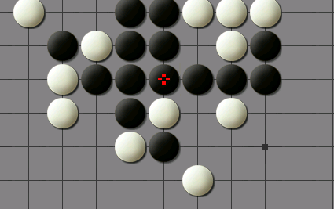

软件发布：弈心2013 (Yixin2013)
#1 软件发布：弈心2013 (Yixin2013) 作者：弈心五子棋 发表时间：2013-4-14 14:26:14
Yixin2013［ 黄药师 于 2013-4-14 14:33:13 时花20金币送鲜花一朵］
［ 黄药师 于 2013-4-14 14:33:13 时花20金币送鲜花一朵］
［ 黄药师 于 2013-4-14 14:33:13 时花20金币送鲜花一朵］
［ 黄药师 于 2013-4-14 14:33:13 时花20金币送鲜花一朵］
［ 黄药师 于 2013-4-14 14:33:13 时花20金币送鲜花一朵］
［ 黄药师 于 2013-4-14 14:33:13 时花20金币送鲜花一朵］
［ 黄药师 于 2013-4-14 14:33:13 时花20金币送鲜花一朵］
［ 黄药师 于 2013-4-14 14:33:13 时花20金币送鲜花一朵］
［ 黄药师 于 2013-4-14 14:33:13 时花20金币送鲜花一朵］
［ 黄药师 于 2013-4-14 14:33:13 时花20金币送鲜花一朵］
［ 小红眼镜 于 2013-4-14 17:41:07 时花20金币送鲜花一朵］
［ 不明飞行物 于 2013-4-14 19:50:15 时花20金币送鲜花一朵］
［ 不明飞行物 于 2013-4-14 19:50:15 时花20金币送鲜花一朵］
［ 不明飞行物 于 2013-4-14 19:50:15 时花20金币送鲜花一朵］
［ 不明飞行物 于 2013-4-14 19:50:15 时花20金币送鲜花一朵］
［ 不明飞行物 于 2013-4-14 19:50:15 时花20金币送鲜花一朵］
#2 Re:软件发布：弈心2013 (Yixin2013) 作者：will 发表时间：2013-4-14 14:33:23
支持！下来看看
#3 Re:软件发布：弈心2013 (Yixin2013) 作者：不明飞行物 发表时间：2013-4-15 10:54:58
下了01-06，解压还提示要07？#4 Re:不明飞行物【==Re:软件发布：弈心2013 (Yixin2013)==】 作者：弈心五子棋 发表时间：2013-4-15 11:15:58
压缩包没有问题，只需要这六个。你要把6个压缩包放到一起，然后打开part1解压。#5 Re:软件发布：弈心2013 (Yixin2013) 作者：屏蔽 发表时间：2013-4-15 14:03:38
所谓的无禁规则具体是指什么？#6 Re:弈心五子棋【==Re:不明飞行物【==Re:软件发布：弈心2013 (Yixin2013)==】==】 作者：不明飞行物 发表时间：2013-4-15 14:29:39
又下了一遍，解压OK。。。之前也是一样下，一样从01解压的，奇了怪的#7 Re:软件发布：弈心2013 (Yixin2013) 作者：屏蔽 发表时间：2013-4-15 15:46:12
gtk安装后win7运行不能 可惜#8 Re:屏蔽【==Re:软件发布：弈心2013 (Yixin2013)==】 作者：梧桐风 发表时间：2013-4-15 15:48:37
引用：+1
原文由 屏蔽 发表于 2013-4-15 15:46:12 :
gtk安装后win7运行不能 可惜
#9 Re:软件发布：弈心2013 (Yixin2013) 作者：弈心五子棋 发表时间：2013-4-15 15:58:15
楼上两位请描述具体问题，软件在winxp和win7下均测试过。#10 Re:软件发布：弈心2013 (Yixin2013) 作者：潇洒 发表时间：2013-4-15 16:32:03
我在WIN7里能运行……
#11 Re:软件发布：弈心2013 (Yixin2013) 作者：罗源棋手 发表时间：2013-4-15 20:06:59
神马情况PB,我还想下个玩呢，听你那么一说W7不能运行，。。。。#12 Re:软件发布：弈心2013 (Yixin2013) 作者：蚩尤血族 发表时间：2013-4-16 0:26:24
经实测win7可以运行#13 Re:软件发布：弈心2013 (Yixin2013) 作者：yjr123 发表时间：2013-5-6 14:46:32
禁手规则设置有问题，有时会走禁手。#14 Re:yjr123【==Re:软件发布：弈心2013 (Yixin2013)==】 作者：will 发表时间：2013-5-6 20:11:21
这个软件问题还是挺多的，我也发现选了有禁它还是会走禁点。还有设了时间有时也不准，尤其是让电脑执黑时，它过半天都不走一步。#15 Re:软件发布：弈心2013 (Yixin2013) 作者：yjr123 发表时间：2013-5-7 8:24:17
选择软件执黑或白后，如果那个DOS窗口没有反应，则需要鼠标在棋盘上点击一下才会开始思考。#16 Re:弈心五子棋【==软件发布：弈心2013 (Yixin2013)==】 作者：雄鹰王 发表时间：2013-6-9 23:52:22
通过亲测发现确实禁手的规则设置有些问题，比如下图中，软件认为必胜了而且直接走到了连六的点上。
#17 Re:软件发布：弈心2013 (Yixin2013) 作者：弈心五子棋 发表时间：2013-6-13 18:54:44
#18 Re:软件发布：弈心2013 (Yixin2013) 作者：棋情 发表时间：2013-9-17 2:38:11
目前看来这和一个垃圾软件没什么区别。我是这么认为的，感觉和黑石差距太大了！希望作者完善！
#19 Re:软件发布：弈心2013 (Yixin2013) 作者：虎哥 发表时间：2013-9-17 9:28:13
棋力不错，算得挺深，感觉无禁版的yixin要强过goro3.9..但是操作实在太不方便了。。。。。#20 Re:软件发布：弈心2013 (Yixin2013) 作者：甜甜圈 发表时间：2013-12-15 12:49:34
hao#21 Re:软件发布：弈心2013 (Yixin2013) 作者：你就在我身边 发表时间：2013-12-15 20:46:23
WIN8能运行么？试了一遍搞不定。。。 ORC的安装程序好像WIN8也弄不了 心都凉了。。。#22 Re:软件发布：弈心2013 (Yixin2013) 作者：极地剑客 发表时间：2014-2-8 23:47:12
早日超越黑石，看前面的评价好像是dos界面？。。。
啥时候出个gui的。
#23 Re:软件发布：弈心2013 (Yixin2013) 作者：怪 发表时间：2014-2-9 20:40:12
加油！好好完善！win的高版本运行不了的可以先弄个虚拟机再装里面。#24 Re:软件发布：弈心2013 (Yixin2013) 作者：清茶小燕 发表时间：2014-9-20 20:54:40
谢谢啊谢谢啊